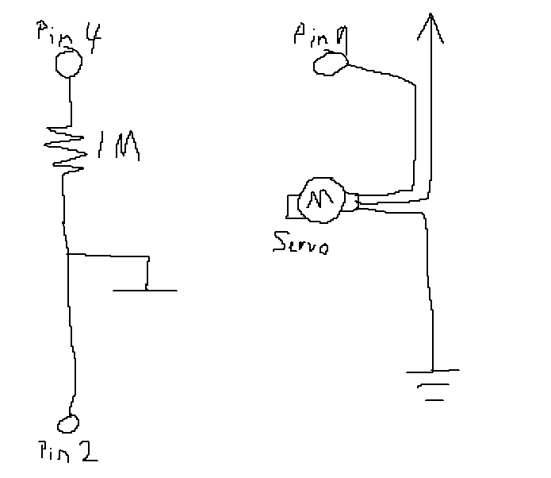
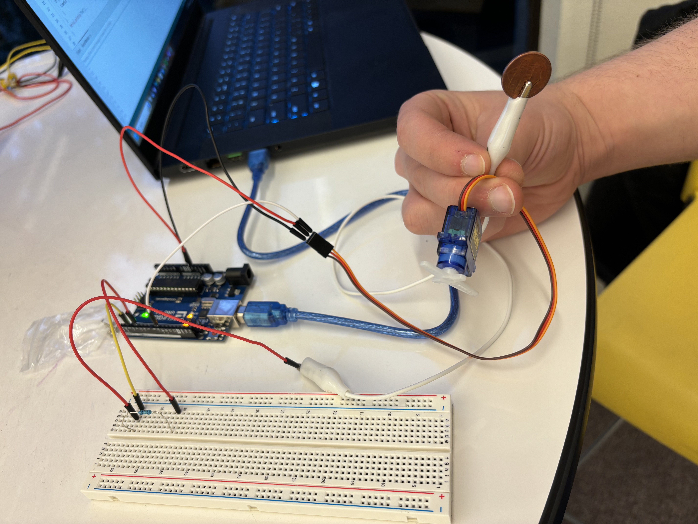
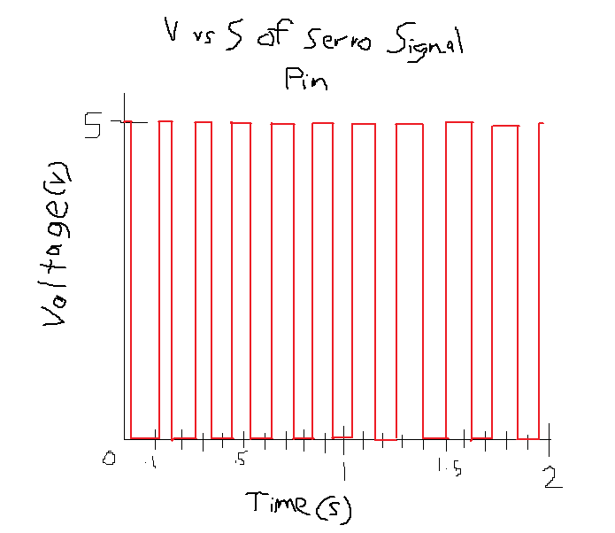

Sam Roberts' Assignment 4: Input/Output!

This is the schematic for the circuit. The schematic has two distinct parts. The capacitive sensor (left) which
serves as the input for the circuit, and the servo motor (right) which uses movment as the output of the circuit.
The capacitive sensor ustilizes a 1 M ohm resistor. The resistance value determines how sensitive the sensor is,
with a high value such as 1 M lowering the sensitivity to requiring touch. If a lower value was used the capacitive
sensor would activate as the hand got close to the half a capacitor. The servo motor only requires power, ground, and
a signal, so those are supplied through the power and ground ports on the Arduino, and the signal comes from pin 9.
Below is an image of the circuit.

The circuit is divided up into two main parts, the capacitive sensor, which serves as the input for the circuit,
and the servo motor which acts as the output through movement. The capacitive sensor uses pin 4 as the sendPin and
pin 2 as the recievePin. There is a 1 Megaohm resistor inbetween the two pins. On the pin 2 side of the resistor there
is a penny that is aligator clipped to a wire which acts as part of the capacitor. The servo motor is wired directly into
power and ground, and connected to pin 9 as the signal pin
#include // Include libraries
#include
Servo myservo; // Initiates a Servo as myservo
CapacitiveSensor cs_4_2 = CapacitiveSensor(4,2); // Initiates Capacitive Sensor as cs_4_2 with pin 4 as send and pin 2 as recieve
int max = 0; // Maximum reading from the capacitive sensor
int min = 1000; // Minimum reading from the capacitive sensor
int motor = 0; // Degree value for servo motor to be set to
void setup() {
// put your setup code here, to run once:
cs_4_2.set_CS_AutocaL_Millis(0xFFFFFFFF); // Disables auto-calibrate (from cs documentation)
myservo.attach(9); // Attach the servo to pin 9 as the signal pin
Serial.begin(9600); // Begin the serial moitor
Serial.println("Start"); // Print "Start" to show calibration has begun
while (millis() < 5000) { // For the first 5 seconds after bootup
long total1 = cs_4_2.capacitiveSensor(30); // Read value from capacitive
if (total1 > max) { // If recorded value is greater than the highest value recorded so far
max = total1; // Set recorded value to be the maximum
}
if (total1 < min) { // If recorded value is less than the lowest value recorded so far
min = total1; // Set recorded value to be the minimum
}
}
Serial.println("End"); // Print "End" to show that calibration has ended
}
void loop() {
// put your main code here, to run repeatedly:
long total1 = cs_4_2.capacitiveSensor(30); // Get reading from CapacitiveSensor
motor = map(total1, min, max, 0, 180); // Map the capacitor value to between 0 and 180, utilizing the min and max from calibration
motor = constrain(motor, 0, 180); // Constrain the mapped value to be between 0 and 180
myservo.write(motor); // Set the servo's angle value
Serial.println(motor); // Print the angle the servo is being set to
delay(25); // Wait 25 milliseconds before looping
}
 Final Circuit in action!
Final Circuit in action!

2. An erroneous reading would be one that varies drastically from the reading before and after it. To check
if a reading is erroneous and should be thrown out a histroy of three readings will be kept, the previous, current,
and next readings. Prevoius is the last value read andw will start at 0, current is the first signal read, and next is the output of
a second read. Current will be checked if it is close in value to either previous or next, and if it is, the current value becomes
prevoius and is sent out, and next becomes current. If it is not close it can be assumes either current or next is an erroneous
reading and both will be disreagarded and two new measurments will be taken. Current could be the erroneous reading since it did not
land close to the other two measurments, or it could be next since not passing could be the result of next being wrong and giving
current an unfair check.
3. In order to address the unpredictable inaccuracy in the sensors measurments I would implement in my code an
average of sensory readings to be the one that is outputted: a for loop that iterates from 4 times, and inside the
loop an int varible called sum_readings is += to the current reading, then after the for loop sum_readings is divided
by four. This finaal oaverage of readings is then mapped and constrained and sent as the output. This would address
the noise because it is likley that that there are values above and below the true reading, and by averaging them you
arrive at a value inbtween them, which is likley not too far off the true value. The circuit would be slightly less
responsive because 4 inputs is one output but it would reduce the noise of the readings.